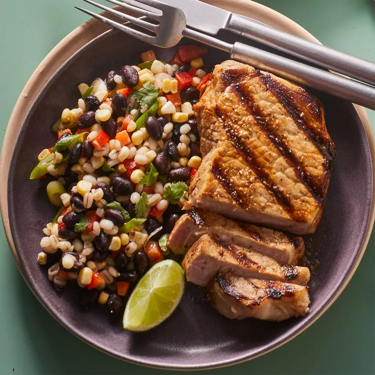

Black Bean Salad with Girlled Pork Cutlets

Description
This hearty bean salad is packed with vibrant colors and contrasting textures. Center-cut boneless pork chops (also called pork cutlets), make a convenient and economical protein to round out the meal. This recipe makes one extra cutlet, which can be refrigerated for another use (see Associated Recipe).
Ingredients
Pork & Marinade
- 1 tablespoon lime juice
- 1 tablespoon canola oil
- ¼ teaspoon garlic powder
- ⅛ teaspoon salt
- ⅛ teaspoon ground pepper
- 3 thin center-cut boneless pork chops (9 oz. total)
Salad
2 tablespoons olive oil or canola oil
2 tablespoons orange juice
2 tablespoons cider vinegar
¾ teaspoon ground cumin
¼ teaspoon dried oregano
¼ teaspoon salt
¼ teaspoon ground pepper
¾ cup canned low-sodium black beans, rinsed
½ cup cooked barley
½ cup diced red bell pepper
⅓ cup fresh corn kernels or frozen corn niblets, cooked according to package instructions
rinsed 2 scallions, chopped
¼ cup coarsely chopped fresh cilantro (optional)
Lime wedges for serving
Steps
- Heat oil in a large nonstick skillet over medium-hig heat until shimmering.
- Marinate pork: Whisk lime juice, 1 Tbsp. oil, garlic powder, and 1/8 tsp. each salt and pepper in a shallow glass dish.
- Add pork; turn to coat. Marinate in the refrigerator, turning once or twice, for 15 to 20 minutes.
- Meanwhile, prepare salad: Whisk oil, orange juice, vinegar, cumin, oregano, salt, and pepper in a medium bowl.
- Set 2 Tbsp. of the dressing aside.
- Add black beans, barley, bell pepper, corn, scallions, and cilantro (if using) to the remaining dressing; toss to coat.
- Preheat grill to medium-high.
- Oil the grill rack (see Tip).
- Discard the marinade and grill the pork until just cooked through (there may be a trace of pink in the center), 2 to 2 1/2 minutes per side.
- Divide the salad between 2 plates and top each salad with a pork cutlet.
- Refrigerate the remaining cutlet for another use; see Associated Recipe.
- Drizzle the pork with the reserved dressing.